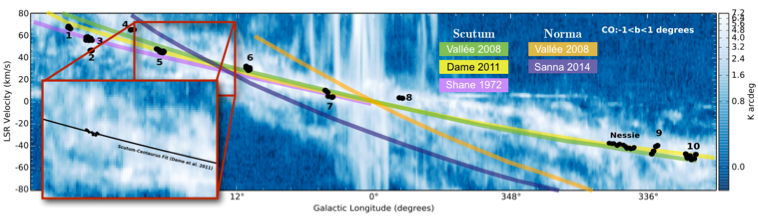

Using the results of their WWT-guided archaelogical “dig,” the team finds 10 likely new Bones. They ask the NSF to fund a project where these 10 Bones and many other (coarser) measures of galactic structure will be used to embark upon mapping the Skeleton of our Milky Way.